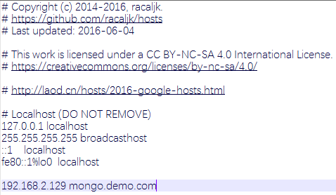
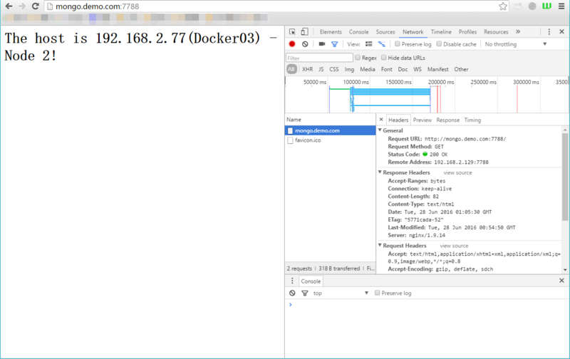

Nginx配置参数中文说明
Nginx配置参数中文详细说明：
#定义Nginx运行的用户和用户组
user www www;
#
#nginx进程数,建议设置为等于CPU总核心数.
worker_processes 8;
#
#全局错误日志定义类型,[ debug | info | notice | warn | error | crit ]
error_log /var/log/nginx/error.log info;
#
#进程文件
pid /var/run/nginx.pid;
#
#一个nginx进程打开的最多文件描述符数目,理论值应该是最多打开文件数（系统的值ulimit -n）与nginx进程数相除,但是nginx分配请求并不均匀,所以建议与ulimit -n的值保持一致.
worker_rlimit_nofile 65535;
#
#工作模式与连接数上限
events
{
#参考事件模型,use [ kqueue | rtsig | epoll | /dev/poll | select | poll ]; epoll模型是Linux 2.6以上版本内核中的高性能网络I/O模型,如果跑在FreeBSD上面,就用kqueue模型.
use epoll;
#单个进程最大连接数（最大连接数=连接数*进程数）
worker_connections 65535;
}
#
#设定http服务器
http
{
include mime.types; #文件扩展名与文件类型映射表
default_type application/octet-stream; #默认文件类型
#charset utf-8; #默认编码
server_names_hash_bucket_size 128; #服务器名字的hash表大小
client_header_buffer_size 32k; #上传文件大小限制
large_client_header_buffers 4 64k; #设定请求缓
client_max_body_size 8m; #设定请求缓
# 开启目录列表访问,合适下载服务器,默认关闭.
autoindex on; # 显示目录
autoindex_exact_size on; # 显示文件大小 默认为on,显示出文件的确切大小,单位是bytes 改为off后,显示出文件的大概大小,单位是kB或者MB或者GB
autoindex_localtime on; # 显示文件时间 默认为off,显示的文件时间为GMT时间 改为on后,显示的文件时间为文件的服务器时间
sendfile on; # 开启高效文件传输模式,sendfile指令指定nginx是否调用sendfile函数来输出文件,对于普通应用设为 on,如果用来进行下载等应用磁盘IO重负载应用,可设置为off,以平衡磁盘与网络I/O处理速度,降低系统的负载.注意：如果图片显示不正常把这个改成off.
tcp_nopush on; # 防止网络阻塞
tcp_nodelay on; # 防止网络阻塞
keepalive_timeout 120; # (单位s)设置客户端连接保持活动的超时时间,在超过这个时间后服务器会关闭该链接
# FastCGI相关参数是为了改善网站的性能：减少资源占用,提高访问速度.下面参数看字面意思都能理解.
fastcgi_connect_timeout 300;
fastcgi_send_timeout 300;
fastcgi_read_timeout 300;
fastcgi_buffer_size 64k;
fastcgi_buffers 4 64k;
fastcgi_busy_buffers_size 128k;
fastcgi_temp_file_write_size 128k;
# gzip模块设置
gzip on; #开启gzip压缩输出
gzip_min_length 1k; #允许压缩的页面的最小字节数,页面字节数从header偷得content-length中获取.默认是0,不管页面多大都进行压缩.建议设置成大于1k的字节数,小于1k可能会越压越大
gzip_buffers 4 16k; #表示申请4个单位为16k的内存作为压缩结果流缓存,默认值是申请与原始数据大小相同的内存空间来存储gzip压缩结果
gzip_http_version 1.1; #压缩版本（默认1.1,目前大部分浏览器已经支持gzip解压.前端如果是squid2.5请使用1.0）
gzip_comp_level 2; #压缩等级.1压缩比最小,处理速度快.9压缩比最大,比较消耗cpu资源,处理速度最慢,但是因为压缩比最大,所以包最小,传输速度快
gzip_types text/plain application/x-javascript text/css application/xml;
#压缩类型,默认就已经包含text/html,所以下面就不用再写了,写上去也不会有问题,但是会有一个warn.
gzip_vary on;#选项可以让前端的缓存服务器缓存经过gzip压缩的页面.例如:用squid缓存经过nginx压缩的数据
#开启限制IP连接数的时候需要使用
#limit_zone crawler $binary_remote_addr 10m;
##upstream的负载均衡,四种调度算法(下例主讲)##
#虚拟主机的配置
server
{
# 监听端口
listen 80;
# 域名可以有多个,用空格隔开
server_name ably.com;
# HTTP 自动跳转 HTTPS
rewrite ^(.*) https://$server_name$1 permanent;
}
server
{
# 监听端口 HTTPS
listen 443 ssl;
server_name ably.com;
# 配置域名证书
ssl_certificate C:\WebServer\Certs\certificate.crt;
ssl_certificate_key C:\WebServer\Certs\private.key;
ssl_session_cache shared:SSL:1m;
ssl_session_timeout 5m;
ssl_protocols SSLv2 SSLv3 TLSv1;
ssl_ciphers ALL:!ADH:!EXPORT56:RC4+RSA:+HIGH:+MEDIUM:+LOW:+SSLv2:+EXP;
ssl_prefer_server_ciphers on;
index index.html index.htm index.php;
root /data/www/;
location ~ .*\.(php|php5)?$
{
fastcgi_pass 127.0.0.1:9000;
fastcgi_index index.php;
include fastcgi.conf;
}
# 配置地址拦截转发，解决跨域验证问题
location /oauth/{
proxy_pass https://localhost:13580/oauth/;
proxy_set_header HOST $host;
proxy_set_header X-Real-IP $remote_addr;
proxy_set_header X-Forwarded-For $proxy_add_x_forwarded_for;
}
# 图片缓存时间设置
location ~ .*\.(gif|jpg|jpeg|png|bmp|swf)$ {
expires 10d;
}
# JS和CSS缓存时间设置
location ~ .*\.(js|css)?$ {
expires 1h;
}
# 日志格式设定
log_format access '$remote_addr - $remote_user [$time_local] "$request" '
'$status $body_bytes_sent "$http_referer" '
'"$http_user_agent" $http_x_forwarded_for';
# 定义本虚拟主机的访问日志
access_log /var/log/nginx/access.log access;
# 设定查看Nginx状态的地址.StubStatus模块能够获取Nginx自上次启动以来的工作状态，此模块非核心模块，需要在Nginx编译安装时手工指定才能使用
location /NginxStatus {
stub_status on;
access_log on;
auth_basic "NginxStatus";
auth_basic_user_file conf/htpasswd;
#htpasswd文件的内容可以用apache提供的htpasswd工具来产生.
}
}
}
Nginx多台服务器实现负载均衡
Nginx负载均衡服务器：
- IP：192.168.0.4（Nginx-Server）
Web服务器列表：
- Web1:192.168.0.5（Nginx-Node1/Nginx-Web1）
- Web2:192.168.0.7（Nginx-Node2/Nginx-Web2）
实现目的：用户访问Nginx-Server（“http://mongo.demo.com:8888”）时，通过Nginx负载均衡到Web1和Web2服务器
Nginx负载均衡服务器的nginx.conf配置注释如下：
events
{
use epoll;
worker_connections 65535;
}
http
{
##upstream的负载均衡,四种调度算法##
#调度算法1:轮询.每个请求按时间顺序逐一分配到不同的后端服务器,如果后端某台服务器宕机,故障系统被自动剔除,使用户访问不受影响
upstream webhost {
server 192.168.0.5:6666 ;
server 192.168.0.7:6666 ;
}
#调度算法2:weight(权重).可以根据机器配置定义权重.权重越高被分配到的几率越大
upstream webhost {
server 192.168.0.5:6666 weight=2;
server 192.168.0.7:6666 weight=3;
}
#调度算法3:ip_hash. 每个请求按访问IP的hash结果分配,这样来自同一个IP的访客固定访问一个后端服务器,有效解决了动态网页存在的session共享问题
upstream webhost {
ip_hash;
server 192.168.0.5:6666 ;
server 192.168.0.7:6666 ;
}
#调度算法4:url_hash(需安装第三方插件).此方法按访问url的hash结果来分配请求,使每个url定向到同一个后端服务器,可以进一步提高后端缓存服务器的效率.Nginx本身是不支持url_hash的,如果需要使用这种调度算法,必须安装Nginx 的hash软件包
upstream webhost {
server 192.168.0.5:6666 ;
server 192.168.0.7:6666 ;
hash $request_uri;
}
#调度算法5:fair(需安装第三方插件).这是比上面两个更加智能的负载均衡算法.此种算法可以依据页面大小和加载时间长短智能地进行负载均衡,也就是根据后端服务器的响应时间来分配请求,响应时间短的优先分配.Nginx本身是不支持fair的,如果需要使用这种调度算法,必须下载Nginx的upstream_fair模块
#
#虚拟主机的配置(采用调度算法3:ip_hash)
server
{
listen 80;
server_name mongo.demo.com;
#对 "/" 启用反向代理
location / {
proxy_pass http://webhost;
proxy_redirect off;
proxy_set_header X-Real-IP $remote_addr;
#后端的Web服务器可以通过X-Forwarded-For获取用户真实IP
proxy_set_header X-Forwarded-For $proxy_add_x_forwarded_for;
#以下是一些反向代理的配置,可选.
proxy_set_header Host $host;
client_max_body_size 10m; #允许客户端请求的最大单文件字节数
client_body_buffer_size 128k; #缓冲区代理缓冲用户端请求的最大字节数,
proxy_connect_timeout 90; #nginx跟后端服务器连接超时时间(代理连接超时)
proxy_send_timeout 90; #后端服务器数据回传时间(代理发送超时)
proxy_read_timeout 90; #连接成功后,后端服务器响应时间(代理接收超时)
proxy_buffer_size 4k; #设置代理服务器（nginx）保存用户头信息的缓冲区大小
proxy_buffers 4 32k; #proxy_buffers缓冲区,网页平均在32k以下的设置
proxy_busy_buffers_size 64k; #高负荷下缓冲大小（proxy_buffers*2）
proxy_temp_file_write_size 64k;
#设定缓存文件夹大小,大于这个值,将从upstream服务器传
}
}
}
负载均衡操作演示如下：
操作对象：192.168.0.4（Nginx-Server）
# 创建文件夹准备存放配置文件
$ mkdir -p /opt/confs
$ vim /opt/confs/nginx.conf
# 编辑内容如下：
events
{
use epoll;
worker_connections 65535;
}
http
{
upstream webhost {
ip_hash;
server 192.168.0.5:6666 ;
server 192.168.0.7:6666 ;
}
server
{
listen 80;
server_name mongo.demo.com;
location / {
proxy_pass http://webhost;
proxy_redirect off;
proxy_set_header X-Real-IP $remote_addr;
proxy_set_header X-Forwarded-For $proxy_add_x_forwarded_for;
proxy_set_header Host $host;
client_max_body_size 10m;
client_body_buffer_size 128k;
proxy_connect_timeout 90;
proxy_send_timeout 90;
proxy_read_timeout 90;
proxy_buffer_size 4k;
proxy_buffers 4 32k;
proxy_busy_buffers_size 64k;
proxy_temp_file_write_size 64k;
}
}
}
# 然后保存并退出
# 启动负载均衡服务器192.168.0.4（Nginx-Server）
docker run -d -p 8888:80 --name nginx-server -v /opt/confs/nginx.conf:/etc/nginx/nginx.conf --restart always nginx
操作对象：192.168.0.5（Nginx-Node1/Nginx-Web1）
# 创建文件夹用于存放web页面
$ mkdir -p /opt/html
$ vim /opt/html/index.html
# 编辑内容如下：
<div>
<h1>
The host is 192.168.0.5(Docker02) - Node 1!
</h1>
</div>
# 然后保存并退出
# 启动192.168.0.5（Nginx-Node1/Nginx-Web1）
$ docker run -d -p 6666:80 --name nginx-node1 -v /opt/html:/usr/share/nginx/html --restart always nginx
操作对象：192.168.0.7（Nginx-Node2/Nginx-Web2）
# 创建文件夹用于存放web页面
$ mkdir -p /opt/html
$ vim /opt/html/index.html
# 编辑内容如下：
<div>
<h1>
The host is 192.168.0.7(Docker03) - Node 2!
</h1>
</div>
# 然后保存并退出
# 启动192.168.0.7（Nginx-Node2/Nginx-Web2）
$ docker run -d -p 6666:80 --name nginx-node2 -v $(pwd)/html:/usr/share/nginx/html --restart always nginx
测试：
域名:mongo.demo.com，这里是用Windows系统主机访问服务器，要在当前主机的hosts中添加解析 “mongo.demo.com 192.168.0.4”，hosts文件所在的路径为 “C:\Windows\System32\drivers\etc”。
这里在Windows主机上通过浏览器访问 “http://mongo.demo.com:8888” 这个站点的时候，Nginx会根据来访的主机的ip_hash值，负载均衡到192.168.0.5（Nginx-Node1/Nginx-Web1）和192.168.0.7（Nginx-Node2/Nginx-Web2）服务器上。
如果其中一个Web服务器无效后，负载均衡服务器会自动将请求转发到正常的Web服务器。  下图是另外做的一组demo的访问效果图，而且容器的端口和IP不同（所有信息都做了相应修改）：
- Nginx-Server：192.168.2.129（Docker01）；
- Nginx-Node1：192.168.2.56（Docker02）；
- Nginx-Node2：192.168.2.77（Docker03）； 